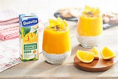
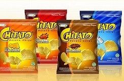
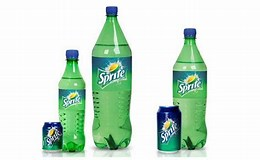
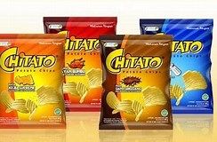
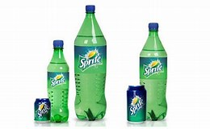

WELCOME TO MY STORE
 Buavita Chocolatos Drink
Chocolatos Drink
 Kacang Garuda Rosta

Chitato

Sprite
Kacang Garuda Rosta

Chitato

SpriteBack to Home
Buavita
Buavita siap minum adalah merek jus buah asli terkemuka di Indonesia. Dibuat dari jus buah asli dengan lebih banyak kandungan buah dan tanpa penambahan pengawet apapun. Memberikan anda kebaikan buah asli. Coba rangkaian produk jus-siap-minum buah asli kami hari ini.
Chocolatos Drink
Chocolatos Choco Drink adalah minuman cokelat serbuk 3in1 pertama di Indonesia dan pada November 2016. chocolatos drink sangat cocok untuk waktu santai maupun waktu formal karena rasanya yang enak dan bikin nagih.
Kacang Garuda Rosta
Garuda Rosta Kacang Oven Rasa Bawang [100 g] merupakan kacang panggang yang dihasilkan dari kacang tanah pilihan yang garing dan padat, serta dibalut oleh tepung terigu dan dipanggang dengan minyak nabati yang sehat, tidak digoreng. Memiliki kandungan yang kaya akan lemak tak jenuh, sehingga dapat mengurangi risiko jantung koroner pada hidup Anda. Cocok dinikmati saat santai bersama teman, sahabat, dan keluarga.
Chitato
Chitato. Chitato, lahir tahun 1990 berasal dari Chiki Potato. Yaitu makanan ringan dari kentang asli, renyah dan penuh rasa, diproses secara higienis dan modern tanpa bahan pengawet dan MSG. Tersedia dengan bentuk yang bergelombang dan rata. Chitato merupakan salah satu produk snack atau makanan ringan yang di produksi oleh PT. Indofood Fritolay Makmur.
Sprite
Sprite Waterlymon Soda merupakan salah satu jenis minuman yang cukup digemari oleh sebagian besar masyarakat Indonesia, selain es kelapa muda dan minuman es lainnya. Sprite Waterlymon salah satunya. Sprite merupakan minuman ringan dengan aroma rasa lemon jeruk. Sprite dijual lebih dari 190 negara dan peringkat sebagai minuman ringan No.3 di seluruh dunia. Minuman dalam kemasan botol ini sangatlah nikmat ketika disajikan dingin dan rasa lemonnya juga akan membuat kita semakin menikmati minuman bersoda ini.
↑ back to top